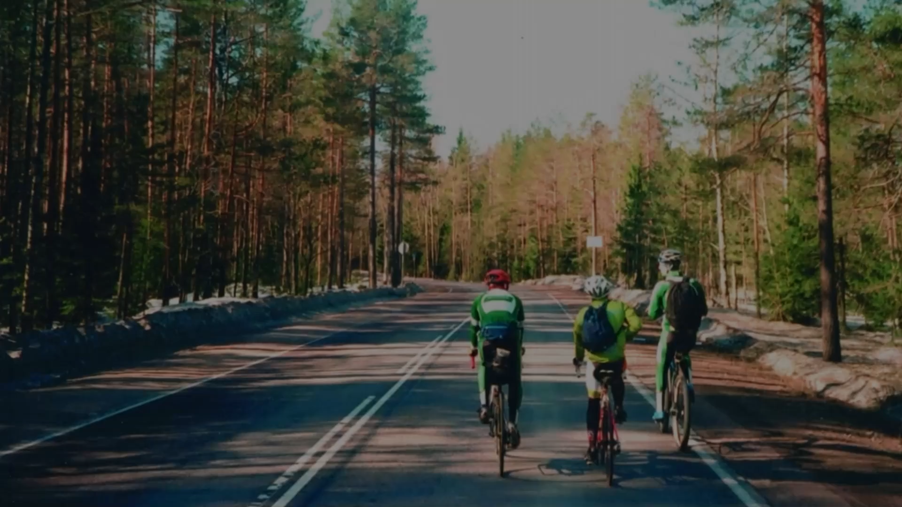

Фотопроект о приключениях
компании велосипедистов друзей
скачать книгу .pdf
60+
маршрутов
4
соулмейта
15 000+
километров
Одна общая любовь к путешествиям

«Эkspresso» — это фотокнига команды
велосипедистов, которая сформировалась
в 2018 году.
Название появилось благодаря постоянным спутникам наших поездок — кофе и опаздываний на электричке.
Чтобы везде успеть, почти все время нам приходилось ехать в режиме «express».
В книге мы собрали любимые фото и истории из десятков мест по Ленинградской области и Карелии, каждое из которых оставило след в нашей памяти:
Мы любим аскетичный образ туризма
и не брезгаем пользоваться природными
материалами в бытовых целях.
Например, готовим на костре, жарим еду на камнях и палках,
а чай завариваем на кустах черники и еловых иголках.
Обожаем те места, которые недосягаемы
для большинства, потому что в них можно
насладиться природной тишиной.
Если по пути попался какой-нибудь интересный закоулок, то мы обязательно
остановимся и изучим это, потому что в таких местах всегда можно
найти что-то уникальное, будь то момент, вещица или осколок истории.


«Жертва Одину» — занимательный факт о том, как мы готовимся к поездкам
В турингах у нас есть один необычный ритуал — не в честь какого-то определенного бога, а в честь удачного путешествия.
Мы подготавливаем по личной вещи и сжигаем ее в костре. В обмен на этот скромный дар мы просим, чтобы поездка оказалась удачной!


Делимся случайными кадрами из поездок,
про которые мы рассказываем в нашем проекте


Нам всегда нравились альбомы наших родителей за то, как же круто пленочная камера передает характер времени через свет, экспозицию и зерно.
Мы хотели создать что-то похожее — свой альбом путешествий, который сохранит не только места и маршруты, но и передаст настроение.
«Моя главная задача — обеспечить безопасность и комфорт нашей группы в путешествии»
Взял на себя роль специалиста по разведению костра, установке палаток, приготовлению еды в лесу и спасению этой троицы в экстремальных ситуациях.

«Не посещал спортивную школу,
но начал тренироваться вместе с друзьями
и вписался в их компанию»
Стал последним, кто присоединился к команде.
Небольшой опыт не помешал втянуться в любительские
марафоны на 200, 300, 400 и даже 600 километров.

«Езжу на коричневом Bianchi 1982
года, потому что новое — это скучно,
а винтаж — это стиль жизни»
Постоянный автор смешных моментов в стиле Чарли Чаплина. Провалиться под лёд, плохо закрепить сумки, сжечь обувь — фирменные трюки.

«Я всегда впереди ребят. Пока мы только собираемся,я уже пристёгиваю велотуфли»
В моем мире ПДД существуют где-то в параллельной
вселенной. Помимо скорости, я одержим велосипедами.
У меня их больше, чем у кого-либо в команде.

В процессе у наших путешествий появилась своя аутентичность, которая развилась в нечто большее, чем просто желание крутить педали по области.
смотреть книгу .pdfВелоспорт для нас это не только новые места, путешествия, но еще и дружба. Мы вложили в проект частички себя и будем рады получить обратную связь!
написать в telegram